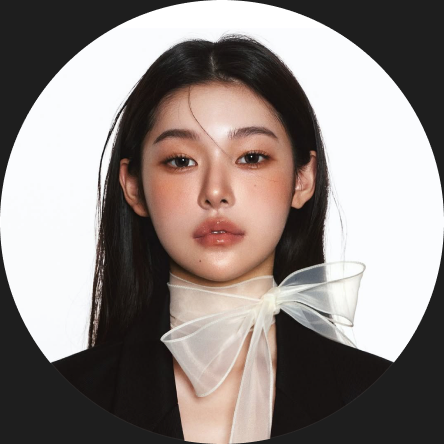

UI/UX
Interfaces built as design systems in Figma: consistent, scalable and handed off dev-ready

I’m Diana, a UI/UX designer with 5+ years of designing digital products. Available for projects
Interfaces built as design systems in Figma: consistent, scalable and handed off dev-ready
A graphic design background turned into type, color and components that feel deliberate
Research, user interviews and hypotheses first, then design for the metric that matters
From mockup to live site: hand-coded, responsive and hosted on its own domain. This site included
Working at the intersection of user needs and business strategy since 2020. Using a User-Centered Design approach, I’ve contributed to the launch of digital products in EdTech and E-commerce
The pairing: graphic design craft, product UX and Claude as a constant collaborator. I shape the user flows, the design system and the interaction details; Claude speeds up everything around them, so the work stays polished and quick to ship
I don’t stop at the mockup. I code my interfaces myself and ship them live on their own domain, responsive and fast. I lean on AI to move quicker through structure and iterations, so more time goes into the design itself
Degree
Degree
Language, level
Language, level
Designing digital products since 2020
Launches of digital products in both domains
Indonesia (ID), working with teams across time zones
Still curious about something? Drop me a line, the contact is at the bottom of the page
Pretty much anything in product design: interfaces, web apps, redesigns, MVPs and landing pages. The one thing I care about is that the product is genuinely useful to the people using it. I’m happiest with startups building an interesting SaaS product, especially small, tight-knit teams
Yes. Beyond design, I code and deploy live sites myself, from a one-pager to a full multi-page site on its own domain (this portfolio included). With Claude in the loop I can spin up a simple landing in a single day. For heavier builds I hand developers clean, spec-ready files
Close and transparent. We sync on a short daily call over Google Meet so nothing drifts, and everything else runs async in Telegram, Slack or straight inside Figma, where comments and files stay in one place. You always know where the project stands
Happily. I prefer working inside a team, plugging in with developers, designers and marketers, though I’m just as fine running things solo. I pick up your context and processes quickly and fit into how you already work
It depends on the scope, so I estimate each project up front and set clear milestones before we start. With Claude I can put together a simple landing page in a day. For anything larger, you’ll have a realistic timeline before any work begins
Closely, across the whole process: research, structure, copy, design systems, documentation and even front-end code. I make every design call and own the craft; Claude takes the heavy lifting around it, so more of my time goes into the design itself